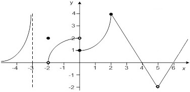

Exercices de vérification
-
Soit
=3x^2+6x-3) et
et
=4x-2) .
.
Évaluer les expressions suivantes (simplifier vos réponses).
)
)
))
)
- Étudier (domaine, image, signes, croissance, extrémums) la fonction
 représentée sur la graphique suivant.
représentée sur la graphique suivant.

- Calculer le domaine de la fonction
=\frac{\sqrt{x^2+x-6}}{x+2}) .
.
Réponses :
- Afficher
- Afficher
- Afficher
Contrainte 1 :
(x-2) &\geq 0
\end{align})
, vrai si

.
Contrainte 2:

.

En effet :

, alors la contraintes

ne change rien.